Bài 04 · Cơ sở toán học cho AI
Trường Đại học Công nghệ · Đại học Quốc gia Hà Nội
Năm học 2026–2027 · Học kỳ 1
Cơ sở của bước lặp: điều kiện Karush–Kuhn–Tucker (KKT), mô hình cục bộ và quy tắc chọn bước.
Trong bài toán lồi, KKT là điều kiện đủ để chứng nhận một ứng viên $x^*$ là tối ưu toàn cục.
Ví dụ: hồi quy có ràng buộc chuẩn, điều kiện dừng
Giả thiết: $f,F$ lồi, khả vi trên miền mở lồi.
Kích thước: $x,u\in\mathbb R^n$, $A\in\mathbb R^{p\times n}$, $b,\nu\in\mathbb R^p$.
Bốn nhóm KKT: khả thi gốc · khả thi đối ngẫu $\lambda\ge0$ · bù trừ · dừng.
Chỉ còn nhóm dừng:
Dừng và khả thi gốc; $\nu$ tự do dấu.
Ba đầu ra cần đạt:
Câu hỏi: cho bài toán cực tiểu hàm lồi $F(u)$ với ràng buộc $Au=b$. Viết hàm Lagrange và hai phương trình KKT. Có cần $\nu\ge0$ không?
Điền công thức:
$L(u,\nu)=$ ....................
Điều kiện dừng: ....................
Khả thi: ....................
Câu hỏi: với $A=[1\;1]$ và $d=(d_1,d_2)^T$, tính $Ad$. Hướng $d$ cần thỏa điều kiện nào để giữ tính khả thi?
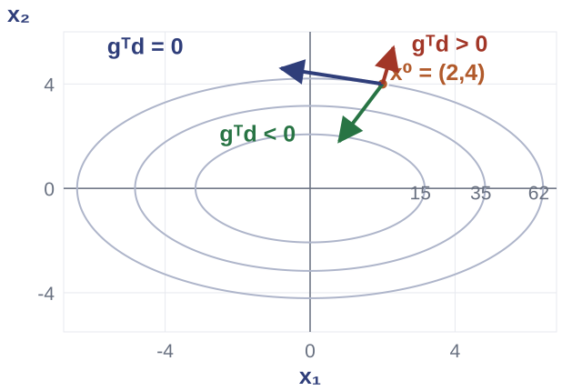
| Đại lượng | Giá trị |
|---|---|
| $f$ | $\tfrac12(3x_1^2+7x_2^2)$ |
| $x^0$ | $(2,4)^T$ |
| $g=\nabla f(x^0)$ | $(6,28)^T$ |
| $f(x^0)$ | $62$ |
Bài con: biến là $d$; $x$ cố định.
$I\succ0$ bảo đảm $Q_I$ lồi chặt (còn gọi là lồi nghiêm ngặt), nghiệm $d_G$ duy nhất.
| Hướng | Đạo hàm hướng | Kết luận |
|---|---|---|
| $d_G=(-6,-28)^T$ | $g^Td_G=-820<0$ | giảm |
| $\tilde d=(-2,1)^T$ | $g^T\tilde d=16>0$ | tăng |
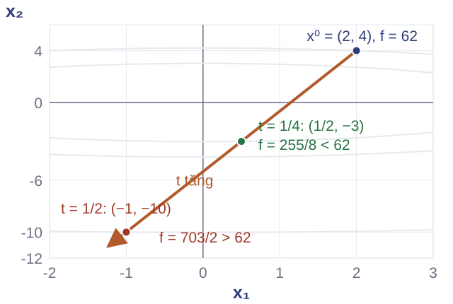
$g^Td<0$, $0<\alpha<1/2$, $0<\beta<1$.
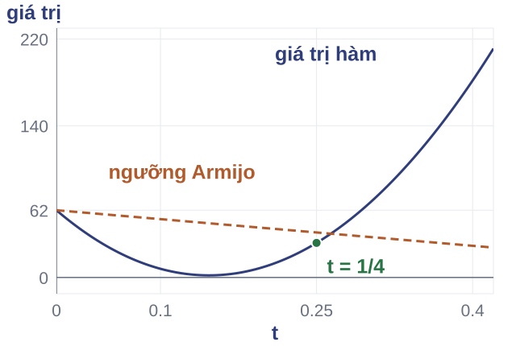
| Lần thử | $t$ | Điểm thử $x+td$ | $f(x+td)$ | Ngưỡng $62+\alpha t\,g^Td$ | Kết luận |
|---|---|---|---|---|---|
| 1 | $1$ | $(-4,-24)^T$ | $2040$ | $-20$ | loại, co $t$ |
| 2 | $1/2$ | $(-1,-10)^T$ | $703/2$ | $21$ | loại, co $t$ |
| 3 | $1/4$ | $(1/2,-3)^T$ | $255/8$ | $83/2$ | nhận |
Đầu vào: $x^0$ trong miền mở, $\varepsilon_g>0$ và $\alpha,\beta$ của Armijo.
Chi phí mỗi lượt: một gradient và các lần đánh giá hàm để thử bước.
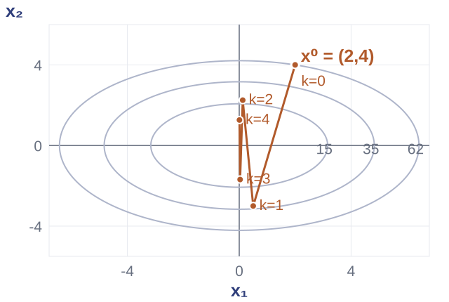
Cấu hình: bước cố định $t=1/4$, hướng gradient $d_G=-g$.
Cấu hình bước cố định tách ảnh hưởng của độ cong khỏi quy tắc quay lui.
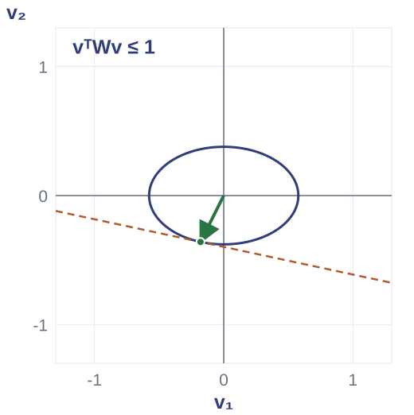
VD1: chọn $W=\operatorname{diag}(3,7)$ theo các hệ số độ cong $3,7$. Tìm điểm tiếp xúc của elip với đường mức $g^Tv=c$ có $c$ nhỏ nhất.
$W\succ0$, $g\ne0$, $v\in\mathbb R^n$.
Lagrange với nhân tử $\zeta\ge0$:
Bước 1 — nhóm dừng: từ $g+2\zeta Wv=0$ và $g\ne0$ suy ra $\zeta>0$ (nếu $\zeta=0$ thì $g=0$, mâu thuẫn).
Bước 2 — nhóm bù trừ: vì $\zeta>0$, điều kiện $\zeta(v^TWv-1)=0$ buộc $v^TWv=1$: ràng buộc hoạt động.
Bước 3 — giải: thay $v=-\tfrac{1}{2\zeta}W^{-1}g$ vào $v^TWv=1$:
Bốn nhóm KKT:
Chuẩn đối ngẫu đo độ dốc lớn nhất trên quả cầu đơn vị:
$v$ có chuẩn bằng $1$; $d$ là hướng để cập nhật $x^+=x+td$.
VD1: $W=\operatorname{diag}(3,7)$, $g=(6,28)^T$.
Câu hỏi: Với $W=\operatorname{diag}(3,7)$, $g=(6,28)^T$: viết điều kiện dừng của $Q_W$ và giải ra $d$. Phân biệt $d$ với hướng chuẩn hóa $v=d/\sqrt{124}$.
Câu hỏi: Với hướng gradient của VD1, Armijo đã nhận $t=1/4$. Xác định có cần thử tiếp $t=1/8$ và giải thích theo quy tắc quay lui.
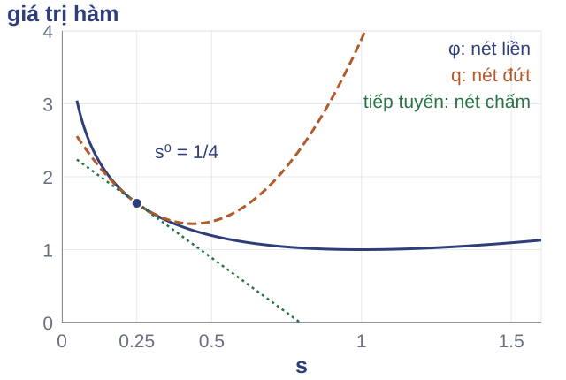
VD2: $\varphi(s)=s-\log s$, $s>0$; logarit tự nhiên.
Điểm đầu: $s^0=1/4$.
Với $g=\nabla f(x)\in\mathbb R^n$, $H=\nabla^2 f(x)\in\mathbb R^{n\times n}$, chọn:
VD2: $16d=3\Rightarrow d=3/16$, $s^+=1/4+d=7/16$.
$H\succ0$: bài con lồi chặt, nghiệm duy nhất.
Điều kiện tối ưu của bài toán gốc tại điểm mới:
Mô hình tuyến tính của vế trái:
Định nghĩa: $\delta_N=\sqrt{d^THd}\ge0$.
| VD2 | Giá trị |
|---|---|
| $d^THd$ | $9/16$ |
| Giảm mô hình | $9/32$ |
Ba phép trừ khác nhau trên cùng ví dụ $\varphi(s)=s-\log s$, $s^0=1/4$, $d=3/16$, $s^+=7/16$:
| Đại lượng | Hai giá trị được trừ | Kết quả |
|---|---|---|
| Giảm mô hình | $Q_H(0)-Q_H(d)$ | $9/32\approx0{,}28125$ |
| Giảm thật một bước | $\varphi(1/4)-\varphi(7/16)$ | $\log(7/4)-3/16\approx0{,}37212$ |
| Sai số tối ưu tại điểm đầu | $\varphi(1/4)-\varphi(1)$ | $\log4-3/4\approx0{,}63629$ |
Nhận bước với $\alpha=1/10$: bước đầy đủ cần giảm ít nhất $\alpha(-g^Td)=9/160$; giảm thật $0{,}37212$ vượt ngưỡng này nên bước được nhận.
$\varphi(s)=s-\log s$, $s>0$.
Tại $s^0=1/4$: $g=-3$, $H=16$.
$16d=3$ cho $d=3/16$, $s^+=7/16$.
Giảm mô hình: $9/32$; nghiệm bài toán gốc: $s^\star=1$.
Câu hỏi: $s^+$ đã đạt nghiệm chưa?
$\varphi'(s^+)=$ ______
Sai số tại $s^0$:
$\varphi(1/4)-\varphi(1)=$ ______
Giải thích vai trò của $9/32$.
Vấn đề cần nghiên cứu: xác định điều kiện để độ giảm Newton cho một cận sai số mục tiêu.
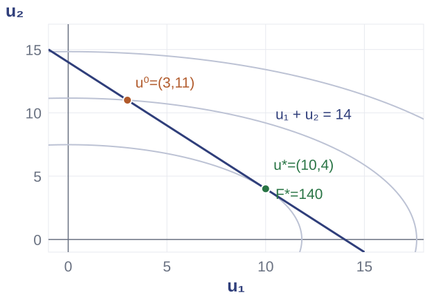
Cực tiểu của mục tiêu trên đường $u_1+u_2=14$ phải đồng thời thỏa điều kiện dừng và khả thi.
VD3: $F=\tfrac12(2u_1^2+5u_2^2)$, ràng buộc $u_1+u_2=14$.
Ứng viên: $u=(10,4)^T$, $\nu=-20$, $F^*=140$.
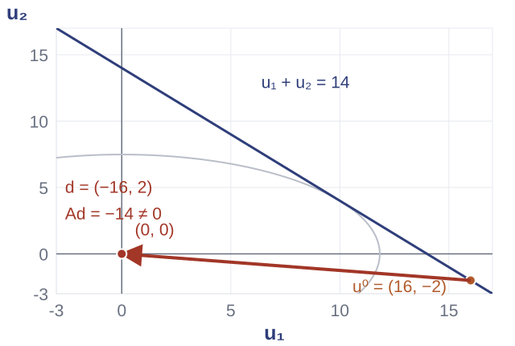
$A=[1\ 1]$, $b=14$. Tại $u=(16,-2)^T$: bước Newton không ràng buộc $(-16,2)^T$ đưa điểm về gốc, vi phạm đẳng thức.
Dữ kiện: $g=(32,-10)^T$, $H=\operatorname{diag}(2,5)$.
Giữ $Au=b$ sau mọi bước $t$ khi và chỉ khi $Ad=0$.
$d,g\in\mathbb R^n$, $H\in\mathbb R^{n\times n}$, $A\in\mathbb R^{p\times n}$; nhân tử $\eta\in\mathbb R^p$.
Bài con: $\min_d\ g^Td+\tfrac12d^THd$ với $Ad=0$.
Đạo hàm theo $d$:
Đạo hàm theo $\eta$:
Dạng ma trận của hai phương trình:
Kích thước: $H$ cấp $n\times n$, $A$ cấp $p\times n$, $\eta\in\mathbb R^p$. Với $H\succ0$ và $A$ đủ hạng hàng, ma trận khối khả nghịch.
Với $g=(32,-10)^T$, hệ Newton là:
Thế $d_2=-d_1$ và trừ hai hàng:
Đặt $\delta_{eq}=\sqrt{d^THd}\ge0$. Kiểm: $Ad=0$, $\delta_{eq}^2=252$; bước $t=1$ tới $(10,4)^T$, giảm $266-140=126$.
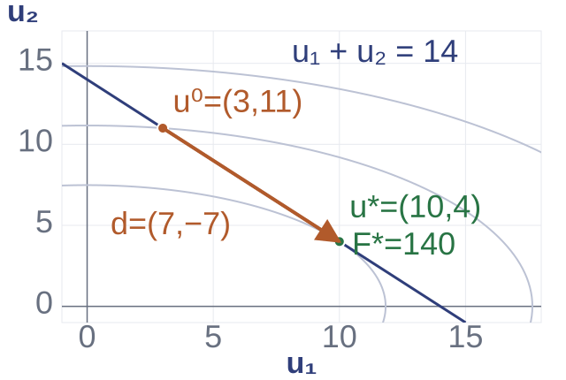
Chọn $A\hat u=b$ và $N\in\mathbb R^{n\times(n-p)}$ có các cột là cơ sở $\ker A$. Khi đó $u=\hat u+Nz$ và $d=N\Delta z$.
Khử nhân tử: $N^TA^T=0$.
VD3: $N=(-1,1)^T$.
$N^THN=7$, $N^Tg=-42$.
Khi tính số, kiểm thêm sai lệch $Au-b$.
Câu hỏi: Từ $Q(d)=g^Td+\tfrac12d^THd$ với $Ad=0$: viết $L_m$, lấy hai đạo hàm rồi xếp ma trận; nhân $N^T$ cho hệ nào?
Dữ kiện VD3 để kiểm $d$ nếu cần: $g=(32,-10)^T$, $H=\operatorname{diag}(2,5)$, $A=[1\ 1]$, $b=14$, điểm đầu $(16,-2)^T$.
Điểm đầu mới: $u=(1,8)^T$, $\nu=4$; giữ VD3 với $A=[1\ 1]$, $b=14$.
Điều kiện dừng:
Khả thi:
Gradient $g=(2,40)^T$.
Số gia $d\in\mathbb R^n$, $\Delta\nu\in\mathbb R^p$; $H=\nabla^2F(u)$.
$r_d(u+d,\nu+\Delta\nu)\approx r_d+Hd+A^T\Delta\nu$
$r_p(u+d)=r_p+Ad$
Đặt hai biểu thức mô hình bằng 0:
$r_d+Hd+A^T\Delta\nu=0,\qquad r_p+Ad=0.$
$\begin{bmatrix}H&A^T\\A&0\end{bmatrix}\begin{bmatrix}d\\\Delta\nu\end{bmatrix}=-\begin{bmatrix}r_d\\r_p\end{bmatrix}.$
| Đối chiếu | Hệ khả thi | Hệ phần dư |
|---|---|---|
| Ẩn thứ hai | nhân tử $\eta$ | số gia $\Delta\nu$ |
| Vế phải | $-[g;0]$ | $-[r_d;r_p]$ |
| Giả thiết | $H\succ0$, $A$ đủ hạng hàng | giữ nguyên |
Với bài con mở rộng $Ad=-r_p$, nhân tử của nó thỏa $\eta=\nu+\Delta\nu$.
Trừ hai hàng đầu: $2d_1-5d_2=38$.
Thế $d_2=5-d_1$: $7d_1=63$.
Bước đầy đủ:
$u^+=(1,8)^T+d=(10,4)^T$.
$\nu^+=4-24=-20$.
Kiểm: $r_p^+=10+4-14=0$.
Trường hợp mục tiêu phải tăng: $u=(0,0)^T$, $\nu=0$.
$F=0<140=F^\star$ nhưng $r_p=-14$.
Đến nghiệm khả thi đòi hỏi $F$ tăng.
Gộp $r=[r_d;r_p]\ne0$, $\Delta=[d;\Delta\nu]$; $J_r$ là ma trận Jacobi của $r$.
Dừng khi $\|r_p\|_2\le\varepsilon_p$ và $\|r_d\|_2\le\varepsilon_d$.
$r_p^+=(1-t)r_p$
$\nu^+=(1-t)\nu+t\eta$
Bước đầy đủ $t=1$ cho $\nu^+=\eta$.
Câu hỏi: Với $u=(1,8)^T$, $\nu=4$, giải thích vì sao vế phải tọa độ hai của hàng gradient là $-44$ và vế phải hàng ràng buộc là $5$. $\eta=-20$ có phải là $\Delta\nu$ không? Nêu hai điều kiện phải kiểm để dừng.
Lỗi cần sửa: lấy vế phải tọa độ hai là $-40$ (bỏ $A^T\nu$).
Lỗi cần sửa: lấy vế phải hàng ràng buộc là $-5$ thay vì $5$.
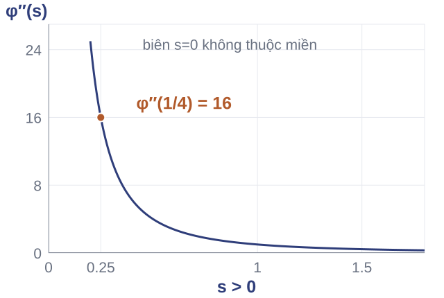
Ký hiệu $\delta=\delta_N=\sqrt{d^THd}\ge0$.
Với VD2: $\delta_N^2=9/16$, nên $\delta=3/4$.
Với $\varphi(s)=s-\log s$: $\varphi''=1/s^2$ không bị chặn trên toàn miền $s>0$.
Cần kiểm biến thiên độ cong tương đối để có một cận sai số.
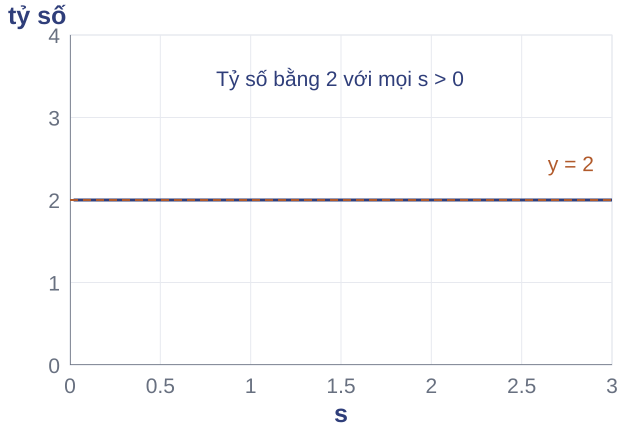
Với $\varphi(s)=s-\log s$: $\varphi''=1/s^2$, $|\varphi'''|=2/s^3$, nên $|\varphi^{\prime\prime\prime}|/(\varphi^{\prime\prime})^{3/2}=2$ trên toàn miền.
Kiểm tại $s=1/4$: $128=2\cdot16^{3/2}$.
Định nghĩa. Hàm lồi $C^3$ trên miền mở lồi là tự điều chỉnh khi mọi hàm $h(t)=f(x+tv)$ trên miền tương ứng thỏa $|h'''|\le2(h'')^{3/2}$.
Giả thiết: hàm tự điều chỉnh, lồi chặt, $H\succ0$, đạt cực tiểu trong miền.
VD2 tại $s=1/4$: $\delta=3/4$.
$\approx0{,}63629$; đúng bằng sai số ở ví dụ này.
Độ giảm mô hình nhỏ hơn sai số mục tiêu trong ví dụ này.
Nếu $F$ tự điều chỉnh thì $\psi(z)=F(\hat u+Nz)$ cũng tự điều chỉnh trên miền tiền ảnh của phép khử đẳng thức.
Điều kiện dùng cận cho hàm rút gọn: $\psi$ lồi chặt, Hessian xác định dương, đạt cực tiểu trong miền, và độ giảm Newton của $\psi$ nhỏ hơn $1$.
Bảo toàn lớp hàm qua hợp thành affine khác tính bất biến của Newton dưới phép đổi tọa độ affine khả nghịch.
Câu hỏi: Hai hàm có cùng đạo hàm bậc hai và ba. Hàm nào đạt cực tiểu hữu hạn?
Câu hỏi: Tại $s=1/4$ của hàm thứ hai:
| Phương pháp | Bài con / điều kiện chọn | Hệ giải | Nhận bước |
|---|---|---|---|
| Gradient | Cực tiểu $Q_I$ | $g+d=0$ | Armijo trên $f$ |
| Chuẩn $W$ | Chuẩn đơn vị, đổi độ dài | $Wd=-g$ | Armijo trên $f$ |
| Newton | Cực tiểu $Q_H$ | $Hd=-g$ | Armijo trên $f$ |
| Newton khả thi | Cực tiểu $Q_H$, $Ad=0$ | KKT theo $d,\eta$ | Armijo trên $F$ |
| Newton phần dư | Tuyến tính hóa KKT gốc | Hệ theo $d,\Delta\nu$ | Chuẩn $\|r\|_2$ |
Bình phương tối thiểu: giải $\min_{w:Aw=b}J(w)$ với $\rho>0$.
$w\in\mathbb R^n$, $M\in\mathbb R^{m\times n}$, $y\in\mathbb R^m$.
$A\in\mathbb R^{p\times n}$ đủ hạng hàng; $b,\nu\in\mathbb R^p$.
| Nhiệm vụ | Sản phẩm cần có |
|---|---|
| Suy ra hướng từ bài con | Lagrange hoặc điều kiện dừng; giả thiết; hướng giải được. |
| Tái tạo một lượt quay lui | Bảng điểm thử, giá trị thật, ngưỡng và bước nhận đầu tiên. |
| Suy ra hai hệ Newton đẳng thức | Hai hàng phương trình; ẩn và vế phải; phép giải số rồi kiểm lại. |
Tài liệu đọc: Boyd và Vandenberghe, Convex Optimization (2004), §5.5.3, §§9.2–9.6, 10.1–10.3.
MIT 6.079, mùa thu 2009: bài giảng 16, sau đó bài giảng 17.